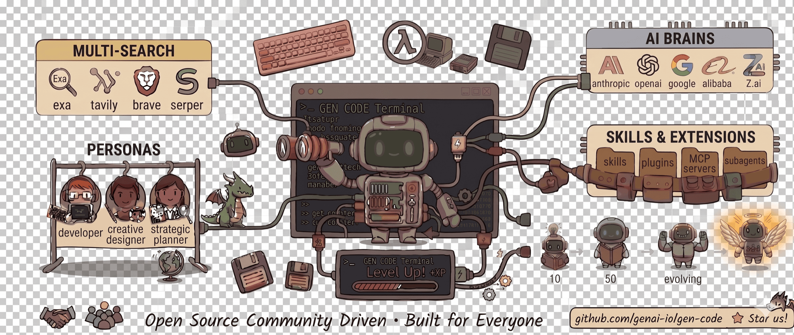

Gen Code — the AI agent
that lives in your terminal
Built on five pluggable pillars — LLMs, search, personas, skills & extensions, and a self-evolving agent that levels up as you work. One Go binary; a unified runtime for specialized agents.


$
curl -fsSL https://raw.githubusercontent.com/genai-io/gen-code/main/install.sh | bash
